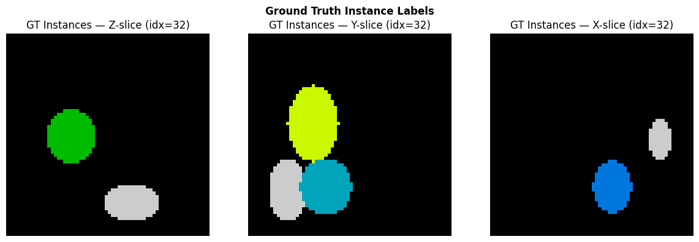
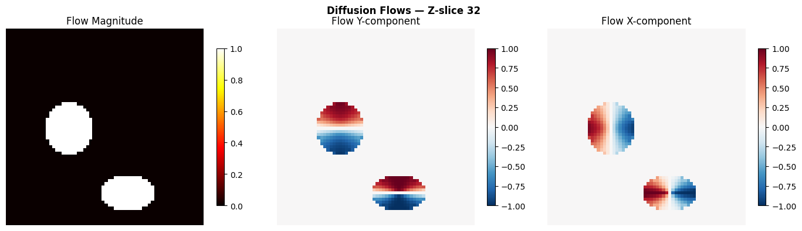
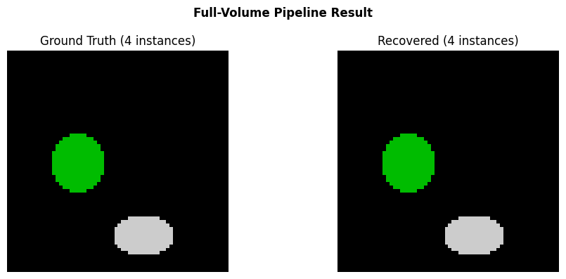

Full-Volume Instance Segmentation
This tutorial demonstrates the complete topo pipeline on a single volume (no tiling):
Create synthetic instance data
Generate diffusion flows
Postprocess flows into instance labels
Visualize every intermediate step
1. Create Synthetic Data
We generate a small 64x64x64 volume with 4 non-overlapping ellipsoidal instances of varying sizes and aspect ratios — mimicking organelles like mitochondria.
import numpy as np
import matplotlib.pyplot as plt
def make_synthetic_instances(shape=(64, 64, 64), n_instances=4, seed=42):
"""Create a volume with non-overlapping ellipsoidal instances."""
rng = np.random.RandomState(seed)
vol = np.zeros(shape, dtype=np.int32)
coords = np.mgrid[0:shape[0], 0:shape[1], 0:shape[2]].astype(np.float32)
for inst_id in range(1, n_instances + 1):
# Random center (away from edges)
margin = 10
center = [rng.randint(margin, s - margin) for s in shape]
# Random semi-axes (elongated)
radii = [rng.randint(5, 15) for _ in range(3)]
# Ellipsoid mask
dist = sum(
((coords[ax] - center[ax]) / radii[ax]) ** 2
for ax in range(3)
)
mask = dist <= 1.0
# Only place where empty
mask = mask & (vol == 0)
vol[mask] = inst_id
return vol
gt_instances = make_synthetic_instances()
n_inst = len(np.unique(gt_instances[gt_instances > 0]))
print(f"Volume shape: {gt_instances.shape}")
print(f"Instances: {n_inst}")
Volume shape: (64, 64, 64)
Instances: 4
# Visualize the ground truth — middle Z-slice
fig, axes = plt.subplots(1, 3, figsize=(12, 4))
for ax, (axis, title) in zip(axes, [(0, "Z-slice"), (1, "Y-slice"), (2, "X-slice")]):
mid = gt_instances.shape[axis] // 2
slc = [slice(None)] * 3
slc[axis] = mid
axes_img = gt_instances[tuple(slc)]
ax.imshow(axes_img, interpolation="nearest", cmap="nipy_spectral")
ax.set_title(f"GT Instances — {title} (idx={mid})")
ax.axis("off")
fig.suptitle("Ground Truth Instance Labels", fontweight="bold")
fig.tight_layout()
plt.show()

2. Generate Diffusion Flows
The diffusion flow generator solves the heat equation inside each instance, then takes the spatial gradient to produce a flow field that points toward each instance’s topological center.
Since this is the full volume (not a crop from a larger dataset), we pass
spatial_mask=None — this uses Dirichlet boundary conditions at the volume
edge, keeping flow directed inward.
from topo import generate_diffusion_flows
flows = generate_diffusion_flows(
gt_instances,
n_iter=200,
spatial_mask=None, # full volume — real boundary
)
print(f"Flow shape: {flows.shape} (3 x D x H x W)")
print(f"Flow dtype: {flows.dtype}")
Flow shape: (3, 64, 64, 64) (3 x D x H x W)
Flow dtype: float32
# Visualize flow magnitude and direction at mid-Z
mid_z = gt_instances.shape[0] // 2
fg = gt_instances > 0
flow_mag = np.sqrt((flows ** 2).sum(axis=0))
fig, axes = plt.subplots(1, 3, figsize=(14, 4))
# Flow magnitude
ax = axes[0]
im = ax.imshow(flow_mag[mid_z], cmap="hot", interpolation="nearest")
ax.set_title("Flow Magnitude")
ax.axis("off")
plt.colorbar(im, ax=ax, shrink=0.8)
# Flow Y component
ax = axes[1]
im = ax.imshow(flows[1, mid_z], cmap="RdBu_r", vmin=-1, vmax=1, interpolation="nearest")
ax.set_title("Flow Y-component")
ax.axis("off")
plt.colorbar(im, ax=ax, shrink=0.8)
# Flow X component
ax = axes[2]
im = ax.imshow(flows[2, mid_z], cmap="RdBu_r", vmin=-1, vmax=1, interpolation="nearest")
ax.set_title("Flow X-component")
ax.axis("off")
plt.colorbar(im, ax=ax, shrink=0.8)
fig.suptitle(f"Diffusion Flows — Z-slice {mid_z}", fontweight="bold")
fig.tight_layout()
plt.show()

3. Postprocess: Flow Tracking + Clustering
The postprocessing pipeline:
Euler integration: each foreground voxel follows the flow for
n_stepsConvergence clustering: voxels that end up near each other are grouped
Small instance filtering: clusters below
min_sizeare removed
from topo import postprocess_single
result = postprocess_single(
sem_mask=fg,
flow=flows,
n_steps=100,
step_size=1.0,
convergence_radius=4.0,
min_size=50,
group=1, # convex morphology group
)
print(f"Recovered instances: {result.max()}")
print(f"GT instances: {n_inst}")
Recovered instances: 4
GT instances: 4
# Compare GT vs recovered
fig, axes = plt.subplots(1, 2, figsize=(10, 4))
ax = axes[0]
ax.imshow(gt_instances[mid_z], interpolation="nearest", cmap="nipy_spectral")
ax.set_title(f"Ground Truth ({n_inst} instances)")
ax.axis("off")
ax = axes[1]
ax.imshow(result[mid_z], interpolation="nearest", cmap="nipy_spectral")
ax.set_title(f"Recovered ({result.max()} instances)")
ax.axis("off")
fig.suptitle("Full-Volume Pipeline Result", fontweight="bold")
fig.tight_layout()
plt.show()

Summary
The full-volume pipeline correctly recovers all instances:
Step |
Output |
|---|---|
Input |
Synthetic instance mask (64x64x64, 4 instances) |
Diffusion flows |
[3, 64, 64, 64] unit vector field |
Postprocessing |
Instance labels matching GT |
For larger volumes that don’t fit in memory, see the Tiled Stitching Tutorial which splits the volume into overlapping sub-crops and stitches the results.